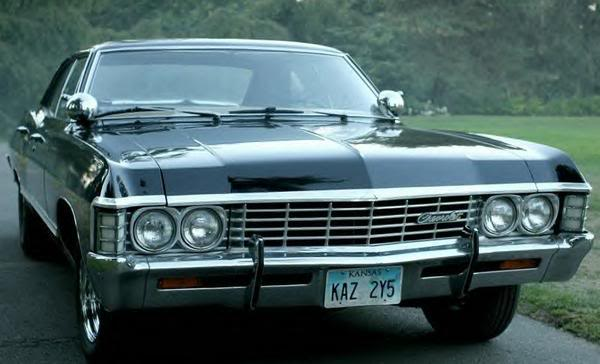
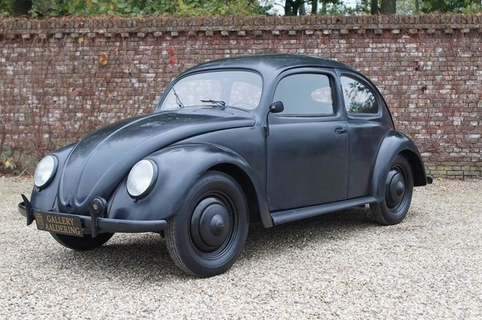

Sudah menjadi kewajiban untuk memanaskan kendaraan ketika mobil akan digunakan.
Saat memanaskan mobil, usahakan untuk mengecek starter mobil anda. Perhatikan apakah terjadi kerusakan di dalamnya.
Biasanya kasus starter yang tidak dapat dinyalakan dikarenakan berkurang suplay bahan bakar maupun udara yang ada.
Sehingga cobalah untuk memeriksa dan membersihkan filter.
Perhatikan penggunaan kopling mobil anda agar tidak mudah aus. Ketika gigi dimasukkan dan kendaraan melaju,
usahakan untuk kaki anda tidak menyentuh bagian pedal kopling. Kebiasaan tersebut akan memberikan dampak mempercepat usia penggunaan kopling mobil anda.
Jangan lupa menyetel ketinggian kopling mobil ketika dirasakan kerja kopling kurang begitu maksimal.
Hal ini dilakukan untuk memperhalus dan mempercepat perpindahan gigi dalam transmisi manual.
Penyetalan kopling dapat anda lakukan sendiri ataupun membawa ke bengkel-bengkel terdekat. Hal ini dapat menjadi cara mengatasi pedal kopling yang berat.
Jangan lupa untuk rutin melakukan tune up pada mobil, anda bisa melakukannya di bengkel-bengkel resmi terdekat yang terpercaya.
Hal ini menjadi salah satu cara perawatan mobil manual yang penting dilakukan. Tune up dapat membuat kondisi mesin mobil anda menjadi lebih awet.
Mengapa? pada proses tune up seluruh komponen-komponne mesin yang vital akan diperiksa secara keseluruhan oleh montir yang ahli.
Sesekali cobalah untuk memacu mobil anda pada kecepatan yang tinggi. Mobil yang sudah lama digunakan biasanya akan banyak kerak di dalam bagian mesinnya.
Untuk menghilangkan kerak-kerak tersebut, cobalah untuk memacu kendaraan dengan kecepatan yang tinggi sehingga nantinya kerak akan keluar melalui knalpot.
Namun pastikan untuk melakukannya di jalanan yang aman dan tidak membahayakan.